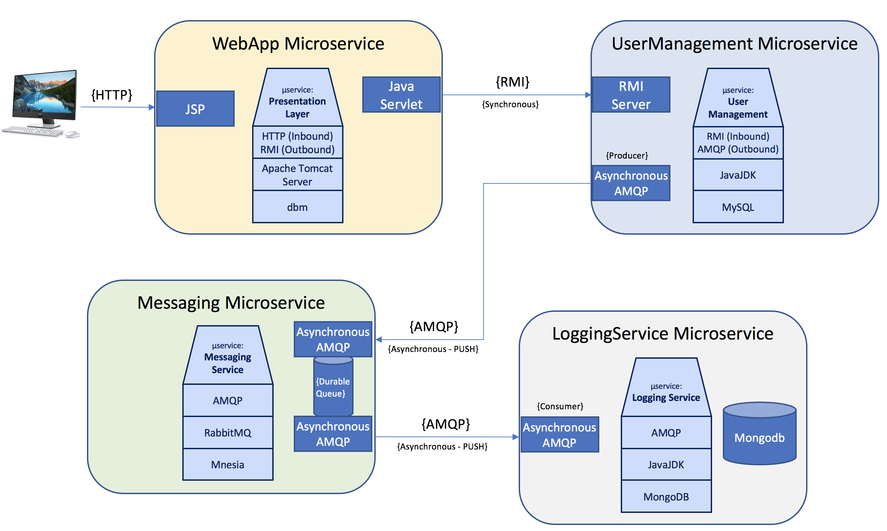

Lab
4 Details for MPCS 51205
Each
lab
will consist of a small problem and details of how to
proceed. Each lab is intended to give every student hands-on
experience with the core technologies utilized during the
course. A student may concentrate, as a team member, on
one technology over another for the final project, but labs are
designed to give each and every student exposure to all the
technologies that come into play. You need to submit labs
to the TAs for grading--see submission instructions below.
Generally, unless otherwise specified, you will have one week to
complete each assigned lab.
See
the
syllabus for information on grading. Turning in lab
assignments on time is required, without exception, and all late deliveries will be
penalized, regardless
of cause. Submit your assignments to the
subversion repository according to the directions on the
syllabus page.
You
may
write this solution in Java.
Lab 3
Due: 5:00 pm, Tuesday, November 17,
2026
Problem
1: Playing With Multiple Dockerized Microservices and
MongoDB:
BACKGROUND:
Like
all programming problems, learning a new technology is not an
exercise in reading but rather and exercise in typing.
This lab is designed to give you hands-on experience in (a)
running multiple dockerized microservices that communicate both
synchronously and asynchronously with each other and finally
write data to a MongoDB database. You will generally find
the References section below helpful in addition to the required
and recommended reading. When we talk about "Docker", we
are talking specifically about the Stable Community Edition of Docker, which is
the version we will be using in this class. The Stable
Community Edition provides the basic container engine and
built-in orchestration, networking, and security.
WHAT YOU NEED TO DO:
STEP 1:
For
this
fourth lab, we are going to run a prototype that consists of
four distinct microservices. This prototype consists of:
1. A dockerized Apache Tomcat web server microservice named WebServer running ubuntu
that will serve up a web page and backing jsp and Java servlet
that will prompt the user to add a new user to the system.
This web page is for adding new users only and is strictly no frills. A
field for a username, and a second field for a password, and an
"Confirm New User" button that, when clicked, does no error
checking and sends the new user request (over synchronous RMI
from the servlet) to the UserManagement
microservice, which has an RMI Server listening for remote
calls.
2.
A dockerized UserManagement
microservice running ubuntu that hosts an RMI Server that
listens for new user requests from the WebServer's servlet-based
RMI client. A synchronous RMI client
running in the servlet on the WebServer
is used to communicate new user requests to the RMI server
running on UserManagement.
3. The RMI server running on UserManagement receives the new user request
and forwards that request asynchronously
to a queue running in a dockerized RabbitMQ microservice called MyWabbit.
4. A dockerized LoggingService,
based on a docker MongoDB image will be listening/subscribed to
the MyWabbit's "new
user" queue, and upon every incoming message (about a new user
to add), will write that new user's information out to a new
MongoDB document. Note that the purpose of the MongoDB
database is not to
store new user information, but to provide a document store for log messages
from the system.
The
big picture here is this:

These
steps will involve running several different docker containers
and installing software inside them. Details are below. After downloading and installing the prototype
in STEPS 2-5, get the prototype running (there will be a few
code and environment changes you will need to make) and examine the code carefully
and observe how it executes.
First,
make
sure docker is running either on your laptop (Option I from the
first lab) or in your VM (Option II from the first lab).
STEP 2:
Get RabbitMQ working in a
Docker Container (MyWabbit microservice)
You will reuse your MyWabbit
microservice from the previous lab. If you have removed
it or it has otherwise suffered irreperable damage, you may
create another one. Simply refer back to the
instructions for Lab 3, STEP 1, in order to do that.
(You may need to docker rm your current MyWabbit
container). You will need to have net-tools installed in
your RabbitMQ container. You should have installed
net-tools in Lab 3.
One thing. docker exec into the container and execute
cat
/etc/hosts
You will see
something like:
root@silly-wabbit:/#
cat /etc/hosts
...
172.17.0.2
silly-wabbit
Write down
the IP address reported for your MyWabbit (aka silly-wabbit)
container. It will be something like "173.17.0.2".
Note that your mileage may vary and what's important is that
last digit. You will need to modify some source in both the UserManagement and LoggingService containers
with that IP address and name.
The good news is this is all you have to do for STEP 2.
STEP 3:
Get ubuntu working in a Docker
Container (UserManagement microservice)
First, get
down the Ubuntu:18.04 container. Do this by executing the
following command:
docker run -di --hostname usrmgr
--name UserManagement -p 1099:1099 -p 1100:1100 ubuntu:22.04
Once you have that container down (and
running), obtain a bash shell in that container by running
docker exec into the container. Once you are in your UserManagement container,
docker exec into the container and install some software in the
container:
apt-get update
apt-get install -y vim
apt-get install -y net-tools
apt-get install -y
openssh-client
apt-get install -y
--no-install-recommends openjdk-17-jdk-headless
ca-certificates
Next, issue these commands in order:
rm -rf /var/lib/apt/lists/*
apt-get update (yes...again...)
apt-get install -y curl
mkdir -p /opt/lib
curl -fsSL -o /opt/lib/amqp-client-5.21.0.jar
https://repo1.maven.org/maven2/com/rabbitmq/amqp-client/5.21.0/amqp-client-5.21.0.jar
curl -fsSL -o /opt/lib/slf4j-api-1.7.36.jar
https://repo1.maven.org/maven2/org/slf4j/slf4j-api/1.7.36/slf4j-api-1.7.36.jar
curl -fsSL -o /opt/lib/slf4j-simple-1.7.36.jar
https://repo1.maven.org/maven2/org/slf4j/slf4j-simple/1.7.36/slf4j-simple-1.7.36.jar
mkdir /opt/src
Now, get down Lab.4.Tomcat.tgz from the
cluster:
cd /
scp
userid@linux.cs.uchicago.edu:/stage/classes/archive/2026/fall/51205-1/libs/Lab.4.UserManagement.tgz
.
tar xzvf Lab.4.UserManagement.tgz
Examine the java source code listed below carefully. Make
sure you understand what is going on. Focus
specifically on:
/opt/src/um/proto/um/UserManagementServer.java
/opt/src/common/proto/common/UserService.java
Now, we need to update the /etc/hosts file in our user management
container to make sure that the user management container and code
can find RabbitMQ. We want to add a line for our
silly-wabbit container:
vi or edit the /etc/hosts file, and add the (red)
line for RabbitMQ and save it (make sure it matches the actual IP
that you recorded in Step 2 above!):
172.17.0.4 usrmgr
172.17.0.2 silly-wabbit
mywabbit
Next, execute:
mkdir -p /opt/app
And then compile all the source code:
javac -cp "/opt/lib/*" -d /opt/app $(find
/opt/src -name '*.java')
Once this is all done, all that's left us is to execute it:
nohup java -cp "/opt/app:/opt/lib/*"
proto.um.UserManagementServer > /tmp/um.log 2>&1 &
You should not see any errors. Fix any
issues. If you do experience issues, my money is on IP
mismatches between containers...
You can verify that your UserManagementServer is running by
issuing this command:
ps -ef
UID
PID PPID C STIME
TTY TIME
CMD
...
root
4061 7 7 11:54
pts/0 00:00:00 java
-cp /opt/app:/opt/lib/* proto.um.UserManagementServer
...
You are looking for that line that lists the java line running proto.um.UserManagementServer.
STEP 4:
Get MongoDB working in a
Docker Container (LoggingService microservice)
First, get
down the MongoDB database Server into a new container. Do
this by executing the following docker command:
docker run -di --hostname logger --name
LoggingService -p 28017:28017 -p 27017:27017 -e
MONGODB_PASS="password" -v /data/db -d mongo:8.0
Read the MongoDB
page on the docker hub to make sure you understand the
implication of these port assignments. Once you have that
container down (and running), obtain a bash shell in that
container by running docker exec into the container. Once
you are in your LoggingService container, install some software
in the container:
apt-get update
apt-get install -y vim
apt-get install -y net-tools
apt-get install -y openssh-client
apt-get install -y --no-install-recommends
openjdk-17-jdk-headless ca-certificates
apt-get install -y curl
Now, execute the following commands:
mkdir /opt/lib
curl -fsSL -o /opt/lib/amqp-client-5.21.0.jar
https://repo1.maven.org/maven2/com/rabbitmq/amqp-client/5.21.0/amqp-client-5.21.0.jar
curl -fsSL -o /opt/lib/slf4j-api-1.7.36.jar
https://repo1.maven.org/maven2/org/slf4j/slf4j-api/1.7.36/slf4j-api-1.7.36.jar
curl -fsSL -o /opt/lib/slf4j-simple-1.7.36.jar
https://repo1.maven.org/maven2/org/slf4j/slf4j-simple/1.7.36/slf4j-simple-1.7.36.jar
curl -fsSL -o /opt/lib/mongodb-driver-sync-5.1.4.jar
https://repo1.maven.org/maven2/org/mongodb/mongodb-driver-sync/5.1.4/mongodb-driver-sync-5.1.4.jar
curl -fsSL -o /opt/lib/mongodb-driver-core-5.1.4.jar
https://repo1.maven.org/maven2/org/mongodb/mongodb-driver-core/5.1.4/mongodb-driver-core-5.1.4.jar
curl -fsSL -o /opt/lib/bson-5.1.4.jar
https://repo1.maven.org/maven2/org/mongodb/bson/5.1.4/bson-5.1.4.jar
curl -fsSL -o /opt/lib/bson-record-codec-5.1.4.jar
https://repo1.maven.org/maven2/org/mongodb/bson-record-codec/5.1.4/bson-record-codec-5.1.4.jar
Once done, we need some source code for our MongoDB-based
LoggingServer.
cd /
scp
userid@linux.cs.uchicago.edu:/stage/classes/archive/2026/fall/51205-1/libs/Lab.4.LoggingService.tgz
.
tar xzvf Lab.4.LoggingService.tgz
Examine the java source code listed below carefully. Make
sure you understand what is going on. Focus specifically
on:
/opt/src/proto/logging/LoggingService.java
Now, we need to update the /etc/hosts file in our logging
service container (as we did with user management) to make sure
that the logging service container and code can find
RabbitMQ. We want to add a line for our silly-wabbit
container:
vi or edit the /etc/hosts file, and add the (red) line for RabbitMQ and save it
(make sure it matches the actual IP that you recorded in Step 2
above!):
172.17.0.4 usrmgr
172.17.0.2 silly-wabbit
mywabbit
Next, execute:
mkdir /opt/app
And now, let's compile the code:
javac -cp "/opt/lib/*" -d /opt/app $(find
/opt/src -name '*.java')
Next, let's run our MongoDB server (in the background):
mongod --bind_ip_all --dbpath /data/db
&
You may need to hit return twice to retrieve your prompt.
And finally, let's execute our source code:
java -cp "/opt/app:/opt/lib/*"
proto.logging.LoggingService &
Hit return once more. You should not see any errors.
Fix any issues. If you do experience issues, my money is
on IP mismatches between containers...
STEP
4:
Get Tomcat working in a
Docker Container (WebService microservice)
First, get down the Apache Tomcat app server into a new
container. Do this by executing the following docker
command:
docker run -di --hostname tomcat --name
WebServer -p 8080:8080 tomcat:10.1-jdk17-temurin-noble
Once
you have that container down (and verify it is running), obtain
a bash shell in that container by running docker exec into the
container:
docker exec -it WebServer /bin/bash
Once you are in your WebService
container, install some software in the container.
Run the following commands at the root prompt:
apt-get update
apt-get install -y
vim
apt-get install -y
net-tools
apt-get install -y
openssh-client
Next, let's blow away the default Tomcat stuff:
rm -rf /usr/local/tomcat/webapps/*
And then let's create some working directories:
mkdir -p /opt/src/common /opt/src/web
/usr/local/tomcat/webapps/ROOT/WEB-INF/classes
/opt/src/web
Now, get down Lab.4.Tomcat.tgz from the cluster:
cd /
scp
userid@linux.cs.uchicago.edu:/stage/classes/archive/2026/fall/51205-1/libs/Lab.4.Tomcat.tgz
.
tar xzvf Lab.4.Tomcat.tgz
Now, let's examine the code. Look through the
following source files carefully and make sure you
understand what is going on inside each:
/opt/src/common/proto/common/UserService.java
/opt/src/web/proto/web/AddUserServlet.java
/opt/src/common/proto/common/UserService.java
/usr/local/tomcat/webapps/ROOT/index.jsp
/usr/local/tomcat/webapps/ROOT/result.jsp
Once you have a good idea of what is going on, hop out of
your container's bash shell and have docker restart the
Tomcat server:
docker restart WebServer
Now, exec a bash shell back into WebServer.
One last thing: we need to add the IP address for the
UserManagement container to our WebServer. Hop back
into your UserManagement container and type:
root@usrmgr:/#
cat /etc/hosts
127.0.0.1 localhost
...
172.17.0.4
usrmgr
172.17.0.2 silly-wabbit
mywabbit
Copy that red usrmgr line with
its IP address, and we're going to add that line to our
/etc/hosts file in our WebServer container's /etc/hosts file
(with one modification):
root@tomcat:/usr/local/tomcat# cat
/etc/hosts
127.0.0.1
localhost
...
172.17.0.6 tomcat
172.17.0.4
usrmgr usermanagement
Save the /etc/hosts file.
STEP 6:
Add a new user:
WebServer startup:
Go to your browser and hit
http://localhost:8080
You should now be in the Tomcat
servlet for entering a new user into our "system".
You will now
verify that it all works "soup to nuts":
Now, enter a new user and a new user
password. Click on the "Confirm New User" button. You
should see no errors. If you see errors, it is most likely
due to a mismatch among IP addresses and names. Fix those
mismatches.
Then, navigate to your LoggingService terminal, and see if you
have new output. You should see some output in the
terminal:
root@logger:/# Logged new user
document: NewName
Now, hit return once and run the mongo shell:
root@mongodb:# mongosh
At the "test>" prompt in mongo, type the
following commands:
> show dbs
> use
logging
> show
collections
>
db.newUsers.find().pretty()
> quit()
You should see the message for the new user you created in
mongodb, as a new document. Your interaction should look
something like this:
test> show
dbs
admin 40.00 KiB
config 92.00 KiB
local 40.00 KiB
logging 40.00 KiB
test> use logging
switched to db logging
logging> show collections
newUsers
logging> db.newUsers.find().pretty()
[
{
_id:
ObjectId('6ae9d073f22b527ce2e4afca'),
username: 'NewUser',
password: 'NewPass',
receivedAt:
ISODate('2026-11-03T12:15:47.121Z')
}
]
logging>
You see that, congratulations: you've
done quite a lot.
An aside:
Note that the default
logging location for Tomcat is /usr/local/tomcat/logs/* in the
Tomcat container. You will find that the log calls (for
debugging purposes...not your
logging calls to the LoggingService) in the servlet go to a file
called "localhost.2026.11.14.log" (your mileage may vary with
the name, but you can grep the logs directory for
"context.log"), and you can add log calls inside the servlet
code like this:
...
context.log("in doPost");
context.log("in Preparing to call RMI");
String userName =
request.getParameter( "user_name" );
context.log("userName is: "+userName);
String userPassword =
request.getParameter( "user_password" );
context.log("userPassword is: "+userPassword);
...
A sample of the output of this logging looks like this:
192.168.65.1 - - [02/Nov/2026:19:23:13 +0000] "GET /addUser
HTTP/1.1" 405 752
192.168.65.1 - - [02/Nov/2026:19:23:16 +0000] "GET / HTTP/1.1"
200 302
192.168.65.1 - - [02/Nov/2026:19:23:50 +0000] "POST /addUser
HTTP/1.1" 200 261
192.168.65.1 - - [02/Nov/2026:19:25:16 +0000] "GET / HTTP/1.1"
200 302
192.168.65.1 - - [02/Nov/2026:19:25:26 +0000] "POST /addUser
HTTP/1.1" 200 271
192.168.65.1 - - [02/Nov/2026:19:27:48 +0000] "GET / HTTP/1.1"
200 302
192.168.65.1 - - [02/Nov/2026:19:27:55 +0000] "POST /addUser
HTTP/1.1" 200 271
192.168.65.1 - - [02/Nov/2026:19:27:59 +0000] "GET / HTTP/1.1"
200 302
192.168.65.1 - - [02/Nov/2026:19:28:52 +0000] "POST /addUser
HTTP/1.1" 200 271
192.168.65.1 - - [02/Nov/2026:19:29:56 +0000] "GET / HTTP/1.1"
200 302
You can add context.log() calls to enhance your understanding of
what the servlet code is doing.
STEP 8:
Review.
It might behoove you to now go back "down" through the code,
from the tomcat servlet through the UserManagement service
through the LoggingService code, and make sure you understand
what all is taking place here.
STEP 9:
Your turn (only if you want).
Now, the servlet really doesn't know whether the user and
password were actually successfully logged in the mongodb
database. Frankly, in the real world, that's perfectly
fine, and the cost of doing business "fire and forget".
But what if the servlet did
want to know that the data was successfully logged before it
returned from doPost? Let's imagine that we do care.
Now, create a
Request/Reply queue in the Rabbit management console (one each)
and have the servlet create a CorrelationID (you can hard-code
this CorrelationID) after it has made the call to the RMI server
in UserManagement, and send the CorrelationID via the Request
queue from doPost().
Then, inside the LoggingService
code, after
successfully writing the data to the mongodb database, have the
LoggingService retrieve
the CorrelationID from the Request queue and send it back to the
servlet via the Reply queue, which will be listening to the
Reply queue.
Once the servlet receives the CorrelationID back from the
LoggingService via the Reply queue, the servlet can then
consider its work "done". Create both the Request and
Reply queues as durable.
Hints: You will need to add the amqp jar to the Tomcat's
lib directory and restart the Tomcat WebServer container.
References:
You
may
find the following references helpful (in addition to the links
from previous labs):
Ubuntu
package
commands
The docker page
for MongoDB
MongoDB
Documentation Home Page
Microservices resources at MongoDB
General Docker Tutorial Links
Docker
Cheat
Sheet
Submission:
For Labs:
Each student should submit their Lab_N files and any supporting
materials to the repo. Use the folder named "lab_4" in
your repository (create it if necessary). Please
include a README text file that contains any instructions or
additional details for the TAs to assist with grading.
Setup:
We
will be using the MPCS GitLab server for version control. The
department has published a tool to replace GitHub's Classroom.
You will login with your CNET ID at
https://course-repos.cs.uchicago.edu/. Here you will find
classes you're registered for that have repositories for that
class. You will click on the MPCS 51205 — Topics in Software
Engineering course for which the repository has been created for
then that should take you to the repository that's been created.
You can click on your CNETID (as that should have a hyperlink)
to take you to the GitLab repository page. That page will
contain the instructions needed to clone your repository. You
will then perform standard git add, git commit, git push for all
homework assignments. This will mean you will perform mkdir
commands to create lab repos, which you will push up to your
source main branch.
Please reach out if you have any questions or issues.